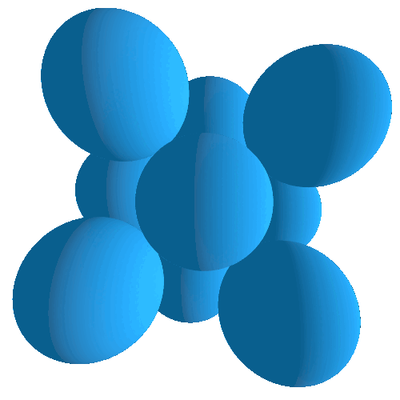
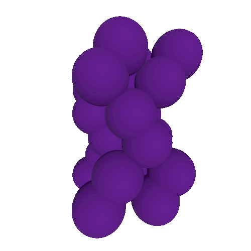
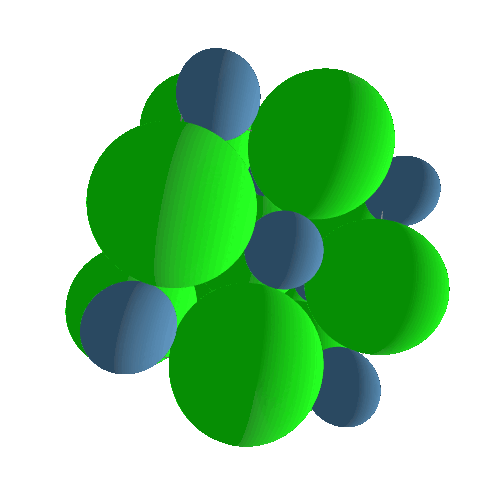
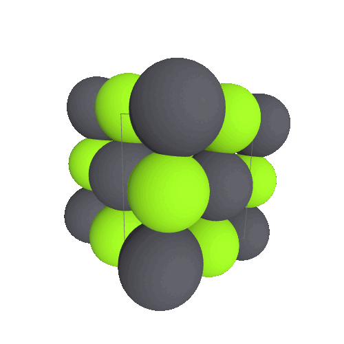

Clasificación de la materia
Materia. Es todo lo que tiene masa y ocupa un lugar en el espacio.
SustanciasLas sustancias se clasifican en:
Sustancias simples. Están formadas por átomos de una sola especie, es decir, por un solo elemento químico. Todos los elementos de la tabla periódica son sustancias simples.
Aluminio
Iodo
Mercurio

Sustancias compuestas. Están formadas por la combinación química de átomos de dos o mas especies, es decir, por diferentes elementos químicos combinados químicamente. Cualquier compuesto químico es una sustancia compuesta.
Cloruro de litio
Seleniuro de plomo
Nitruro de titanio

MezclasUna mezcla es la combinación de dos o más sustancias en proporciones variables y que se pueden separar por métodos físicos, se clasifican en:
Mezclas homogéneas. Es la combinación no química de diferentes sustancias simples (elementos), de diferentes sustancias compuestas (compuesto químicos), o de sustancias simples con sustancias compuestas. Presentan una sola fase, es decir, su composición se mantiene constante en cualquiera de sus partes y NO se pueden distinguir a simple vista los diferentes componentes de la mezcla.

Mezclas heterogéneas. Es la combinación no química de diferentes sustancias simples (elementos), de diferentes sustancias compuestas (compuesto químicos), o de sustancias simples con sustancias compuestas. Presentan una dos o mas fases, es decir, su apariencia no es uniforme, y SI se pueden distinguir a simple vista los diferentes componentes de la mezcla.